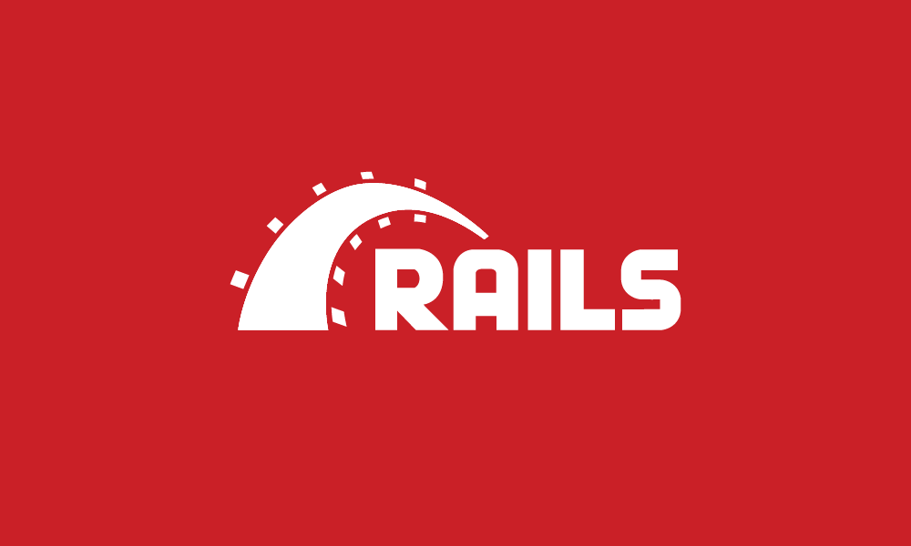
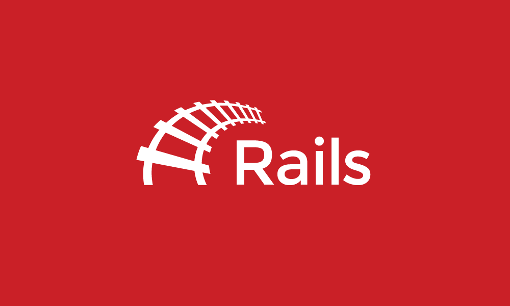

by Dan Perrera
Early this year, the fifth version of the popular open source framework, Ruby on Rails, was released and along with it, a new identity featuring a rearranged logo. The thing that caught my eye about this effort was that it included a thing I’ve never seen before in an open source project – a creative brief.
Rails shouldn’t feel slick. It should be warm, approachable, and welcoming. Rails is in a different place than it was in 2004. It isn’t courting cutting-edge early adopters so we can lay off the gradients. Rails is now for everyone and its site should reflect that.
I’m not sure what exactly is cutting-edge about gradients but all-in-all, I’m impressed with the thought that was put into the brief. However, the caps-lock, tentacle-attack logo that resulted from the process, while remaining consistent with the project’s history, doesn’t fulfill the ideals of the brief.

When feedback was solicited, I offered my help and was told how I could participate. After trying to clean up the current logo, I came to the conclusion that there were no minor tweaks that would bring the current design to a place where it would meet the stated goals, so the next best thing would be a redesign that paid homage to the original. I made this:

Even though I had no expectation that this work would be accepted, I sent along a pull request with a brief pitch explaining how this design balanced the goals listed in the brief with the logo’s history. While the Rails team was very appreciative and cordial, the work was quickly rejected which, even without any expectations, was a bummer.
This was just one experience but I’m sure there are many more like it. The open source process for design is often a complete disaster that creates a toxic environment for designers. An overabundance of personal opinion means that every design decision is turned into an undirected bake-off (which, frankly, is just as bad as those reviled crowd-sourcing design sites). It’s an uphill battle for a designer and, oftentimes, it’s just not worth the time and effort. This is a huge missed opportunity for the open source community – well-considered identity systems can inspire interest, create engagement, and set the tone of how the project is run.
As someone with a foot in both worlds, I don’t believe it has to be that way.
What if — just like projects have a technical lead or small team in charge of their development direction — there was an accompanying “creative” lead, for lack of a better term, appointed to direct the design process, set expectations, and handle contributions from non-developers (like content-strategists, writers, and designers) in the community?
Perhaps it’s too idealistic but maybe this could be a new model for how open source projects are run. If this sounds interesting to you, get in touch. I’d love to work with some thoughtful developers on putting this new idea into action.